{{#unless partner_modus=duo}} {{/unless}}
{{#if partner_modus=duo}}
{{/unless}}
{{#if partner_modus=duo}}
 {{/if}}
{{#unless partner_modus=duo}}{{vorname}} {{nachname}}{{/unless}}{{#if partner_modus=duo}}{{vorname}} & {{vorname2}}{{/if}}
{{/if}}
{{#unless partner_modus=duo}}{{vorname}} {{nachname}}{{/unless}}{{#if partner_modus=duo}}{{vorname}} & {{vorname2}}{{/if}}

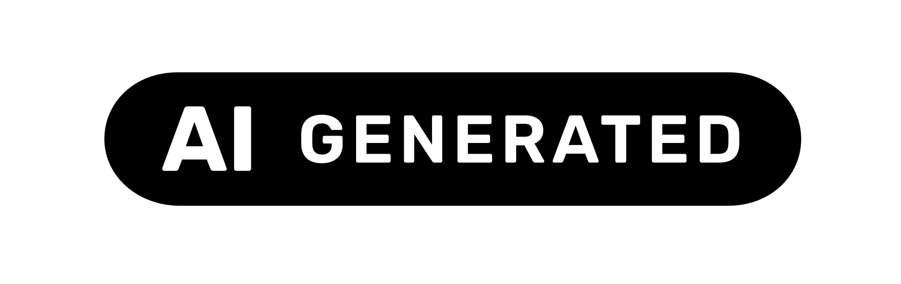
Starte deinen Stoffwechsel-Reset. Keine Diät, keine Shakes, kein Zählen. Dafür 4 feste Mahlzeiten und patentierte Supplemente, damit sich dein Alltag richtig gut anfühlt.Start your metabolism reset. No diet, no shakes, no counting. Instead 4 solid meals and patented supplements, so your everyday life feels really good.Inizia il tuo reset del metabolismo. Niente dieta, niente shake, niente conteggi. Al loro posto 4 pasti fissi e integratori brevettati, per sentirti davvero bene nella vita di tutti i giorni.Запусти перезагрузку обмена веществ. Никаких диет, шейков и подсчётов. Вместо этого 4 приёма пищи по чёткому режиму и запатентованные добавки, чтобы в обычной жизни тебе было по-настоящему хорошо.Почни своє перезавантаження метаболізму. Це не дієта, не шейки і не підрахунки. Натомість 4 прийоми їжі за розкладом та запатентовані добавки, щоб у повсякденні тобі було справді добре.Zacznij swój reset metabolizmu. Bez diety, bez shake’ów, bez liczenia. Za to 4 stałe posiłki i opatentowane suplementy, żeby na co dzień było ci naprawdę dobrze.Започни своя рестарт на метаболизма. Без диети, без шейкове, без броене. Вместо това 4 редовни хранения и патентовани добавки, за да се чувстваш наистина добре в ежедневието си.अपना मेटाबॉलिज़्म रीसेट शुरू कीजिए। न कोई डाइट, न शेक, न गिनती का झंझट। इसके बजाय 4 तय मील्स और पेटेंटेड सप्लीमेंट्स, ताकि आपकी रोज़ की ज़िंदगी सच में अच्छी लगे।Metabolizma resetlemeye başla. Diyet yok, shake yok, hesap kitap yok. Onun yerine 4 sabit öğün ve patentli takviyeler, böylece günlük hayatın gerçekten iyi hissettirir.Započni svoj reset metabolizma. Bez dijete, bez šejkova, bez brojanja. Umesto toga 4 fiksna obroka i patentirani suplementi, da se u svakodnevici osećaš stvarno dobro.Empieza tu reset metabólico. Sin dietas, sin batidos, sin contar. A cambio, 4 comidas fijas y suplementos patentados, para que en tu día a día te sientas de maravilla.开始你的代谢重启。不节食，不喝代餐奶昔，也不用算来算去。只要每天4顿固定正餐，再配合专利营养补充品，让你每天都过得更舒服。대사 리셋을 시작해 보세요. 다이어트도, 셰이크도, 칼로리 계산도 없어요. 대신 하루 4번 정해진 식사와 특허받은 서플리먼트로 일상이 확실히 좋아지는 걸 느낄 수 있게요.
{{#unless partner_modus=duo}}Schreib mir direktMessage me directlyScrivimi direttamenteНапиши мне напрямуюНапиши мені напрямуNapisz do mnie bezpośrednioПиши ми директноमुझे सीधे मैसेज करेंBana direkt yazPiši mi direktnoEscríbeme directamente直接给我发消息바로 메시지 보내기{{/unless}}{{#if partner_modus=duo}}Schreib uns direktMessage us directlyScrivici direttamenteНапиши нам напрямуюНапиши нам напрямуNapisz do nas bezpośrednioПиши ни директноहमें सीधे मैसेज करेंBize direkt yazPiši nam direktnoEscríbenos directamente直接给我们发消息저희에게 바로 메시지 보내기{{/if}}
Hochwertige Vitalstoffe aus einem patentierten Konzept. Nicht aus dem Supermarktregal.High-quality nutrients from a patented concept. Not off the supermarket shelf.Sostanze nutritive di alta qualità, da un concetto brevettato. Non prese dallo scaffale del supermercato.Качественные микронутриенты по запатентованной концепции. А не с полки супермаркета.Якісні нутрієнти за запатентованою концепцією. Не з полиці супермаркету.Wysokiej jakości mikroskładniki z opatentowanej koncepcji. Nie z półki w supermarkecie.Висококачествени хранителни вещества от патентована концепция. Не от рафта в супермаркета.हाई-क्वालिटी पोषक तत्व, एक पेटेंटेड कॉन्सेप्ट से। सुपरमार्केट की शेल्फ़ से नहीं।Patentli bir konseptten gelen kaliteli besin öğeleri. Süpermarket rafından değil.Kvalitetne vitalne materije iz patentiranog koncepta. Ne sa police u supermarketu.Nutrientes de alta calidad basados en un concepto patentado. Nada de la estantería del súper.高品质营养素，来自专利配方。不是超市货架上随手拿的那种。특허받은 콘셉트로 만든 고품질 영양소예요. 마트 진열대에서 아무거나 집어 드는 제품이 아니에요.
Kein Snacken zwischendurch, kein Weglassen. Klare Struktur, satt bis zum nächsten Mal.No snacking in between, no skipping. Clear structure, full until the next meal.Niente snack tra un pasto e l’altro, niente pasti saltati. Una struttura chiara e niente fame fino al pasto successivo.Никаких перекусов и пропущенных приёмов пищи. Чёткий режим, и сытости хватает до следующей еды.Без перекусів між прийомами їжі й без пропусків. Чітка структура і ситість аж до наступної їжі.Bez podjadania między posiłkami, bez pomijania. Jasna struktura i uczucie sytości aż do kolejnego posiłku.Без похапване между храненията, без пропускане. Ясна структура и не огладняваш до следващото хранене.बीच-बीच में स्नैकिंग नहीं, कोई मील स्किप नहीं। साफ़ स्ट्रक्चर, और अगले खाने तक पेट भरा रहता है।Arada atıştırmak yok, öğün atlamak yok. Net bir düzen ve bir sonraki öğüne kadar tok kalırsın.Nema grickanja između obroka, nema preskakanja. Jasna struktura, a sitost traje do sledećeg obroka.Sin picar entre horas, sin saltarte comidas. Una estructura clara y sin hambre hasta la siguiente comida.两餐之间不吃零食，也不跳餐。安排清楚，一顿管饱到下一顿。중간 간식도, 끼니 거르기도 없어요. 구조는 명확하게, 다음 식사 때까지 든든하게요.
Für ein paar Wochen raus, damit dein Körper zur Ruhe kommt. Nicht für immer, nur in der Kernphase.Out for a few weeks so your body can settle. Not forever, just for the core phase.Via per qualche settimana, così il tuo corpo può ritrovare la calma. Non per sempre, solo nella fase centrale.Убираем на несколько недель, чтобы организм немного отдохнул. Не навсегда, только в основной фазе.На кілька тижнів вони зникають із меню, щоб твій організм міг перепочити. Не назавжди, лише в основній фазі.Na kilka tygodni je odstawiasz, żeby twój organizm mógł odpocząć. Nie na zawsze, tylko w fazie głównej.Изваждаме ги за няколко седмици, за да може тялото ти да се успокои. Не завинаги, само в основната фаза.कुछ हफ़्तों के लिए बंद, ताकि आपके शरीर को आराम मिल सके। हमेशा के लिए नहीं, सिर्फ़ कोर फेज़ में।Vücudun biraz dinlensin diye birkaç haftalığına çıkıyor. Sonsuza kadar değil, sadece ana aşamada.Izbacujemo ih na nekoliko nedelja, da se tvoje telo smiri. Ne zauvek, samo u glavnoj fazi.Los dejamos fuera unas semanas para que tu cuerpo pueda descansar. No para siempre, solo durante la fase central.先停几周，让身体缓一缓。不是永远不吃，只在核心阶段。몇 주 동안만 빼서 몸이 쉬어갈 수 있게 해요. 평생이 아니라, 핵심 단계에서만요.
In der Aktivierungsphase orientierst du dich am Prinzip der ketogenen Ernährung. Klingt kompliziert, ist es aber nicht: ähnliches Prinzip wie klassisches Keto, nur ohne extreme Fett-Löffel und ohne ständigen Verzicht.In the activation phase you follow the principle of a ketogenic diet. Sounds complicated, but it isn't: the same idea as classic keto, just without spoons of pure fat and without constant restriction.Nella fase di attivazione segui il principio dell’alimentazione chetogenica. Sembra complicato, ma non lo è: un principio simile alla keto classica, solo senza grassi a cucchiaiate e senza rinunce continue.В фазе активации ты ориентируешься на принцип кетогенного питания. Звучит сложно, но на деле всё просто: принцип похож на классическое кето, только без жира ложками и без постоянных запретов.У фазі активації ти орієнтуєшся на принцип кетогенного харчування. Звучить складно, але це не так: схоже на класичне кето, тільки без того, щоб їсти жир ложками і без постійних заборон.W fazie aktywacji trzymasz się zasady diety ketogenicznej. Brzmi skomplikowanie, ale wcale takie nie jest: zasada podobna do klasycznego keto, tylko bez jedzenia tłuszczu łyżkami i bez ciągłych wyrzeczeń.Във фазата на активиране следваш принципа на кетогенното хранене. Звучи сложно, но не е: подобно е на класическото кето, само че без да ядеш мазнина с лъжица и без постоянно лишаване.एक्टिवेशन फेज़ में आप कीटोजेनिक डाइट के सिद्धांत को फ़ॉलो करते हैं। सुनने में मुश्किल लगता है, पर है नहीं: क्लासिक कीटो जैसा ही सिद्धांत, बस चम्मच भर-भरकर फैट खाने की ज़रूरत नहीं और हर वक़्त परहेज़ भी नहीं।Aktivasyon aşamasında ketojenik beslenme prensibini esas alırsın. Kulağa karmaşık geliyor ama değil: klasik ketoya benzer bir prensip, sadece kaşık kaşık yağ yemeden ve sürekli kendini kısıtlamadan.U fazi aktivacije pratiš princip ketogene ishrane. Zvuči komplikovano, ali nije: sličan princip kao klasični keto, samo bez masti na kašike i bez stalnog odricanja.En la fase de activación te guías por el principio de la alimentación cetogénica. Suena complicado, pero no lo es: un principio parecido al keto clásico, pero sin comer grasa a cucharadas y sin estar renunciando a todo.在激活阶段，你会参考生酮饮食的原则。听起来有点复杂，其实不难：跟经典生酮差不多，但不用一勺一勺猛吃油脂，也不用一直忍这忍那。활성화 단계에서는 케토제닉 식단의 원리를 따라요. 복잡하게 들리지만 사실 그렇지 않아요. 클래식 케토와 원리는 비슷하지만, 지방을 극단적으로 챙겨 먹지 않아도 되고 계속 참기만 할 필요도 없어요.
Fachbegriff für diesen Zustand: Ketose. Deshalb heißt es auch „ketogene Ernährung".The technical term for this state: ketosis. That's why it's also called a "ketogenic diet".Il termine tecnico per questo stato è chetosi. Per questo si parla di «alimentazione chetogenica».Научное название этого состояния: кетоз. Поэтому питание и называется «кетогенным».Цей стан називається кетоз. Звідси й назва «кетогенне харчування».Fachowo ten stan nazywa się ketozą. Dlatego mówi się też „dieta ketogeniczna”.Терминът за това състояние е кетоза. Затова се нарича и „кетогенно хранене“.इस अवस्था का वैज्ञानिक नाम: कीटोसिस। इसीलिए इसे “कीटोजेनिक डाइट” भी कहते हैं।Bu durumun teknik adı: ketozis. Bu yüzden buna “ketojenik beslenme” denir.Stručni naziv za to stanje: ketoza. Zato se i zove „ketogena ishrana“.El término técnico para este estado: cetosis. Por eso se habla de «alimentación cetogénica».这种状态的专业说法叫酮症，所以才叫“生酮饮食”。이 상태를 전문용어로 케토시스라고 해요. 그래서 “케토제닉 식단”이라고도 부르는 거예요.
Das sind die Rückmeldungen, die immer wieder kommen. Klar, jeder Körper reagiert anders.This is the feedback that keeps coming back. Of course, every body reacts differently.Sono i riscontri che sentiamo più spesso. Certo, ogni corpo reagisce a modo suo.Такие отзывы приходят снова и снова. Конечно, каждый организм реагирует по-своему.Саме такі відгуки приходять знову й знову. Звісно, кожен організм реагує по-своєму.To opinie, które słyszymy raz po raz. Jasne, każdy organizm reaguje inaczej.Това са отзивите, които чуваме отново и отново. Разбира се, всяко тяло реагира различно.यही फीडबैक बार-बार मिलता है। बेशक, हर शरीर अलग तरह से रिएक्ट करता है।Bize en sık gelen geri bildirimler bunlar. Tabii, her beden farklı tepki verir.To su utisci koji se stalno ponavljaju. Naravno, svako telo reaguje drugačije.Estos son los comentarios que escuchamos una y otra vez. Eso sí, cada cuerpo reacciona de forma distinta.这些都是最常听到的反馈。当然，每个人的身体反应都不一样。자주 듣는 이야기들이에요. 물론 몸은 사람마다 다르게 반응해요.

Von morgens bis abends. Ohne dass der Kaffee die Hauptrolle spielt.From morning to night. Without coffee doing all the heavy lifting.Dalla mattina alla sera. Senza che il caffè faccia da protagonista.С утра до вечера. И кофе больше не играет главную роль.З ранку до вечора. І кава вже не в головній ролі.Od rana do wieczora. Bez kawy w roli głównej.От сутрин до вечер. Без кафето да е в главната роля.सुबह से शाम तक। बिना कॉफ़ी को मुख्य सहारा बनाए।Sabahtan akşama kadar. Kahvenin başrol oynamasına gerek kalmadan.Od jutra do večeri. A da kafa ne igra glavnu ulogu.De la mañana a la noche. Sin que el café sea el protagonista.从早到晚，咖啡不再是主角。아침부터 저녁까지요. 커피가 주인공이 되지 않아도 돼요.

Bessere Konzentration und mehr Fokus, wenn du sie brauchst.Better concentration and sharper focus when you need it.Migliore concentrazione e più focus quando ti servono.Легче концентрироваться и держать фокус, когда это нужно.Краща концентрація і більше фокусу саме тоді, коли тобі це потрібно.Lepsza koncentracja i więcej skupienia wtedy, gdy ich potrzebujesz.По-добра концентрация и повече фокус, когато ти трябват.जब ज़रूरत हो, बेहतर एकाग्रता और ज़्यादा फोकस।İhtiyacın olduğunda daha iyi konsantrasyon ve daha fazla odak.Bolja koncentracija i više fokusa, kad ti zatrebaju.Mejor concentración y más enfoque cuando los necesitas.需要的时候，更能集中注意力，更专注。필요할 때 더 잘 집중할 수 있어요.

Kein Ziehen nach unten mehr. Du merkst wieder, dass dein Körper mit dir arbeitet, nicht gegen dich.No more being weighed down. You notice again that your body is working with you, not against you.Non senti più quel peso che ti tira giù. Ti accorgi di nuovo che il tuo corpo lavora con te, non contro di te.Больше нет ощущения, что тебя тянет вниз. Ты снова чувствуешь, что тело работает с тобой, а не против тебя.Більше жодної важкості. Ти знову відчуваєш, що тіло працює на тебе, а не проти тебе.Nic już nie ciągnie cię w dół. Znowu czujesz, że twoje ciało współpracuje z tobą, a nie działa przeciwko tobie.Вече го няма онова усещане, че нещо те дърпа надолу. Пак усещаш, че тялото ти работи с теб, а не срещу теб.अब वो भारीपन नहीं, जो आपको नीचे खींचता था। आपको फिर महसूस होता है कि आपका शरीर आपके साथ काम कर रहा है, आपके ख़िलाफ़ नहीं।Artık seni aşağı çeken o his yok. Vücudunun sana karşı değil, seninle birlikte çalıştığını yeniden fark edersin.Nema više tog osećaja da te nešto vuče nadole. Ponovo osećaš da tvoje telo radi sa tobom, a ne protiv tebe.Se acabó esa sensación de pesadez. Vuelves a notar que tu cuerpo trabaja contigo, no contra ti.不再总觉得身体沉沉的、被什么拖着。你会重新感觉到，身体在配合你，而不是跟你作对。몸이 축 처지는 느낌이 없어요. 몸이 나를 거스르는 게 아니라, 나와 함께 움직인다는 걸 다시 느껴요.

Der Morgen fühlt sich anders an. Weniger schwerfällig, mehr sofort da.Mornings feel different. Less sluggish, more instantly there.La mattina è un’altra cosa. Meno fatica a carburare, e ci sei subito.Утро ощущается иначе. Меньше тяжести, и ты быстрее включаешься.Ранок відчувається інакше. Менше млявості, і ти одразу в тонусі.Rano czujesz się inaczej. Mniej ociężale, szybciej wchodzisz w dzień.Сутринта се усеща различно. По-малко мудност, по-бързо се разсънваш.सुबह कुछ अलग लगती है। कम सुस्ती, और आप तुरंत एक्टिव।Sabahlar farklı geçer. Daha az mahmurluk, daha çabuk kendine gelirsin.Jutro je drugačije. Manje tromosti, više bistrine od prvog trenutka.Las mañanas se notan distintas. Te cuesta menos arrancar y estás en marcha desde el primer momento.早上的感觉会不一样。没那么沉，更快进入状态。아침 느낌이 달라져요. 덜 무겁고, 일어나자마자 정신이 들어요.

Kein ständiges Denken ans nächste Essen. Kein Nasch-Zwang um drei. Wird einfach leiser.No constant thinking about the next meal. No 3pm sugar cravings. It just quiets down.Niente pensiero fisso al prossimo pasto. Niente voglia matta di sgranocchiare qualcosa alle tre. Semplicemente, tutto si calma.Ты не думаешь постоянно о следующей еде. Нет навязчивой тяги к сладкому в три часа дня. Всё это просто отходит на второй план.Без постійних думок про наступну їжу. Без нестримної тяги до солодкого о третій. Усе просто стихає.Bez ciągłego myślenia o następnym posiłku. Bez nieodpartej ochoty na słodkie o piętnastej. Po prostu robi się spokojniej.Не мислиш постоянно за следващото хранене. Без онзи глад за сладко в три следобед. Просто затихва.हर वक़्त अगले खाने के बारे में सोचना नहीं। दोपहर तीन बजे मीठे की तलब नहीं। यह सब बस अपने आप हल्का पड़ने लगता है।Sürekli bir sonraki öğünü düşünmek yok. Saat üçte tatlı krizi yok. Hepsi kendiliğinden sakinleşir.Nema stalnog razmišljanja o sledećem obroku. Nema one želje za nečim slatkim oko tri popodne. Sve to jednostavno utihne.Dejas de pensar todo el rato en la próxima comida. Adiós al antojo de dulce a media tarde. Simplemente, va perdiendo fuerza.不用总想着下一顿吃什么。下午三点也不再被零食牵着走。这些念头自然就淡了。다음 끼니 생각이 계속 맴돌지 않아요. 오후 3시만 되면 군것질 생각나던 것도 없어요. 그냥 자연스럽게 잠잠해져요.

Was du in den Phasen lernst, nimmst du in den Alltag mit.What you learn in the phases, you take with you into everyday life.Quello che impari nelle fasi te lo porti nella vita di tutti i giorni.Всё, чему ты научишься за эти фазы, останется с тобой и в обычной жизни.Те, чого навчишся за ці фази, залишиться з тобою і в повсякденні.To, czego uczysz się w poszczególnych fazach, przenosisz na co dzień.Каквото научиш през фазите, го вземаш със себе си в ежедневието.फेज़ में जो आप सीखते हैं, वह रोज़ की ज़िंदगी में आपके साथ रहता है।Aşamalarda öğrendiklerini günlük hayatına taşırsın.Ono što naučiš kroz faze prenosiš u svakodnevicu.Lo que aprendes en las fases te lo llevas a tu día a día.你在各个阶段学到的东西，会带到日常生活里。각 단계에서 배운 것들을 일상으로 가져가요.
Klingt nach dem was du suchst? {{#unless partner_modus=duo}}Ich erklär{{/unless}}{{#if partner_modus=duo}}Wir erklären{{/if}} dir alles.Sounds like what you're after? {{#unless partner_modus=duo}}I'll walk{{/unless}}{{#if partner_modus=duo}}We'll walk{{/if}} you through it.Ti sembra quello che stavi cercando? {{#unless partner_modus=duo}}Ti spiego{{/unless}}{{#if partner_modus=duo}}Ti spieghiamo{{/if}} tutto.Похоже на то, что ты ищешь? {{#unless partner_modus=duo}}Расскажу{{/unless}}{{#if partner_modus=duo}}Расскажем{{/if}} тебе всё.Схоже на те, що ти шукаєш? {{#unless partner_modus=duo}}Я все тобі поясню{{/unless}}{{#if partner_modus=duo}}Ми все тобі пояснимо{{/if}}.Brzmi jak to, czego szukasz? {{#unless partner_modus=duo}}Wszystko ci wyjaśnię{{/unless}}{{#if partner_modus=duo}}Wszystko ci wyjaśnimy{{/if}}.Звучи като това, което търсиш? {{#unless partner_modus=duo}}Ще ти обясня{{/unless}}{{#if partner_modus=duo}}Ще ти обясним{{/if}} всичко.लगता है, आपको इसी की तलाश थी? {{#unless partner_modus=duo}}मुझसे सब कुछ समझ लीजिए{{/unless}}{{#if partner_modus=duo}}हमसे सब कुछ समझ लीजिए{{/if}}।Kulağa aradığın şey gibi mi geliyor? {{#unless partner_modus=duo}}Sana her şeyi anlatayım{{/unless}}{{#if partner_modus=duo}}Sana her şeyi anlatalım{{/if}}.Zvuči kao ono što tražiš? {{#unless partner_modus=duo}}Objasniću{{/unless}}{{#if partner_modus=duo}}Objasnićemo{{/if}} ti sve.¿Suena a lo que buscas? {{#unless partner_modus=duo}}Te lo explico{{/unless}}{{#if partner_modus=duo}}Te lo explicamos{{/if}} todo.这正是你想要的吗？{{#unless partner_modus=duo}}我来{{/unless}}{{#if partner_modus=duo}}我们来{{/if}}给你讲清楚。찾고 있던 게 바로 이건가요? {{#unless partner_modus=duo}}제가{{/unless}}{{#if partner_modus=duo}}저희가{{/if}} 다 설명해 드릴게요.
Kurz mit {{#unless partner_modus=duo}}{{vorname}}{{/unless}}{{#if partner_modus=duo}}uns{{/if}} schreibenMessage {{#unless partner_modus=duo}}{{vorname}}{{/unless}}{{#if partner_modus=duo}}us{{/if}}{{#unless partner_modus=duo}}Scrivi a {{vorname}}{{/unless}}{{#if partner_modus=duo}}Scrivici{{/if}}Написать{{#unless partner_modus=duo}}: {{vorname}}{{/unless}}{{#if partner_modus=duo}} нам{{/if}}Коротко написати{{#unless partner_modus=duo}}: {{vorname}}{{/unless}}{{#if partner_modus=duo}} нам{{/if}}{{#unless partner_modus=duo}}Kontakt: {{vorname}}{{/unless}}{{#if partner_modus=duo}}Napisz do nas{{/if}}{{#unless partner_modus=duo}}Пиши набързо на {{vorname}}{{/unless}}{{#if partner_modus=duo}}Пиши ни набързо{{/if}}{{#unless partner_modus=duo}}{{vorname}} को मैसेज करें{{/unless}}{{#if partner_modus=duo}}हमें मैसेज करें{{/if}}{{#unless partner_modus=duo}}{{vorname}} ile{{/unless}}{{#if partner_modus=duo}}Bizimle{{/if}} kısaca yazışNapiši poruku{{#unless partner_modus=duo}}: {{vorname}}{{/unless}}{{#if partner_modus=duo}} nama{{/if}}{{#unless partner_modus=duo}}Escríbele a {{vorname}}{{/unless}}{{#if partner_modus=duo}}Escríbenos{{/if}}找{{#unless partner_modus=duo}}{{vorname}}{{/unless}}{{#if partner_modus=duo}}我们{{/if}}简单聊聊{{#unless partner_modus=duo}}{{vorname}} 님에게 메시지 보내기{{/unless}}{{#if partner_modus=duo}}저희에게 메시지 보내기{{/if}} →In vier klaren Phasen von Woche 1 bis in deinen dauerhaften Alltag.Four clear phases, from week one all the way into your long-term routine.Quattro fasi chiare, dalla settimana 1 fino alla tua routine di tutti i giorni.Четыре понятные фазы: с первой недели и до твоего нового повседневного ритма.Чотири чіткі фази: від першого тижня до звичного повсякдення надовго.Cztery jasne fazy, od 1. tygodnia aż po twoją stałą codzienność.Четири ясни фази, от първата седмица до ежедневието, което остава.चार साफ़ फेज़: पहले हफ़्ते से लेकर आपके स्थायी रूटीन तक।1. haftadan kalıcı günlük düzenine kadar, dört net aşama.U četiri jasne faze, od 1. nedelje pa sve do tvoje dugoročne svakodnevice.Cuatro fases claras, desde la semana 1 hasta tu día a día a largo plazo.从第1周开始，4个清晰阶段，一直过渡到你长期的日常生活。1주 차부터 꾸준히 이어갈 일상까지, 네 단계로 명확하게 진행돼요.


Im Programm ist jeder Tag entweder weiß, grün oder rot. Die Farbe verrät dir sofort, was heute auf den Teller kommt. Kein Grübeln, kein Rechnen.In the programme every day is either white, green or red. The colour tells you right away what goes on the plate. No thinking, no counting.Nel programma ogni giorno è bianco, verde oppure rosso. Il colore ti dice subito cosa mettere nel piatto oggi. Niente dubbi, niente conti.В программе каждый день бывает либо белым, либо зелёным, либо красным. Цвет сразу подсказывает, что сегодня будет на тарелке. Без раздумий и подсчётов.У програмі кожен день буває або білим, або зеленим, або червоним. Колір одразу підказує тобі, що сьогодні буде на тарілці. Без роздумів і підрахунків.W programie każdy dzień jest biały, zielony albo czerwony. Kolor od razu mówi ci, co dziś trafia na talerz. Bez zastanawiania się i bez liczenia.В програмата всеки ден е или бял, зелен или червен. Цветът веднага ти показва какво ще има в чинията днес. Без чудене, без смятане.प्रोग्राम में हर दिन या तो सफ़ेद, हरा या लाल होता है। रंग से आपको तुरंत पता चल जाता है कि आज प्लेट में क्या आएगा। न सोच-विचार, न हिसाब-किताब।Programda her gün ya beyaz, ya yeşil ya da kırmızı. Renk, bugün tabağına ne koyacağını hemen gösterir. Düşünüp durmak yok, hesap yapmak yok.U programu je svaki dan ili beli, zeleni ili crveni. Boja ti odmah kaže šta je danas na tanjiru. Bez razmišljanja, bez računanja.En el programa, cada día es blanco, verde o rojo. El color te dice al momento qué toca poner en el plato hoy. Sin darle vueltas, sin hacer cálculos.在这个计划里，每一天不是白色，就是绿色或红色。看颜色就能马上知道今天该吃什么。不用纠结，也不用计算。프로그램에서는 매일이 흰색, 초록색, 빨간색 중 하나예요. 색깔만 보면 오늘 무엇을 먹으면 되는지 바로 알 수 있어요. 고민도, 계산도 필요 없어요.
Nur Eiweiß, gute Fette, der probiotische Joghurt am Morgen und die Nährstoff-Konzentrate. Auch kein Gemüse. Klingt strikt, gehört aber zur Kernphase dazu.Only protein, good fats, the probiotic yogurt in the morning and the nutrient concentrates. Not even vegetables. Sounds strict, but it's part of the core phase.Solo proteine, grassi buoni, lo yogurt probiotico al mattino e i concentrati di nutrienti. Nemmeno le verdure. Sembra rigido, ma fa parte della fase centrale.Только белок, полезные жиры, пробиотический йогурт утром и концентраты питательных веществ. И даже без овощей. Звучит строго, но это часть основной фазы.Лише білок, корисні жири, пробіотичний йогурт зранку та концентрати поживних речовин. І навіть без овочів. Звучить суворо, але це частина основної фази.Tylko białko, dobre tłuszcze, probiotyczny jogurt rano i koncentraty składników odżywczych. Nawet bez warzyw. Brzmi restrykcyjnie, ale tak wygląda faza główna.Само белтъчини, добри мазнини, пробиотичното кисело мляко сутрин и хранителните концентрати. Дори без зеленчуци. Звучи строго, но е част от основната фаза.सिर्फ प्रोटीन, अच्छे फैट, सुबह का प्रोबायोटिक दही और न्यूट्रिएंट कॉन्सन्ट्रेट। सब्ज़ी भी नहीं। सुनने में सख्त लगता है, लेकिन यह कोर फेज़ का हिस्सा है।Sadece protein, iyi yağlar, sabahki probiyotik yoğurt ve besin konsantreleri. Sebze bile yok. Kulağa katı geliyor ama ana aşamanın bir parçası.Samo proteini, dobre masti, probiotski jogurt ujutru i koncentrati nutrijenata. Čak ni povrće. Zvuči strogo, ali je deo glavne faze.Solo proteína, grasas buenas, el yogur probiótico por la mañana y los concentrados de nutrientes. Tampoco verdura. Suena estricto, pero forma parte de la fase central.只吃蛋白质、好脂肪、早上的益生菌酸奶和营养浓缩粉。连蔬菜也不吃。听起来很严格，但这是核心阶段的一部分。단백질, 좋은 지방, 아침의 프로바이오틱 요거트, 영양소 농축 제품만 먹어요. 채소도 안 먹어요. 엄격하게 들리지만, 핵심 단계에 포함되는 부분이에요.
Wie ein weißer Tag, plus Gemüse und Salat. Der Standard-Tag im Programm.Like a white day, plus vegetables and salad. The standard day in the programme.Come un giorno bianco, più verdure e insalata. Il giorno standard del programma.Как белый день, плюс овощи и салат. Это стандартный день в программе.Як білий день, плюс овочі та салат. Це стандартний день у програмі.Jak biały dzień, plus warzywa i sałata. Standardowy dzień w programie.Като бял ден, плюс зеленчуци и салата. Това е стандартният ден в програмата.सफेद दिन जैसा, साथ में सब्ज़ियाँ और सलाद। प्रोग्राम का स्टैंडर्ड दिन।Beyaz gün gibi, üstüne sebze ve salata. Programdaki standart gün.Kao beli dan, plus povrće i salata. Standardni dan u programu.Como un día blanco, pero añadiendo verduras y ensalada. Es el día estándar del programa.和白色日一样，再加蔬菜和沙拉。这是计划里的标准日。흰색 날과 같지만 채소와 샐러드가 추가돼요. 프로그램의 기본 날이에요.
Wochenende, Feier, Geburtstag. An diesen Tagen darfst du essen was du willst. Aber halt nicht jeden Tag.Weekend, party, birthday. On these days you eat whatever you want. Just not every day.Weekend, festa, compleanno. In questi giorni puoi mangiare quello che vuoi. Però non tutti i giorni.Выходные, праздник, день рождения. В такие дни можно есть всё, что хочется. Но, понятное дело, не каждый день.Вихідні, свято, день народження. У такі дні можна їсти, що хочеш. Але, звісно, не щодня.Weekend, impreza, urodziny. W te dni możesz jeść, co chcesz. Ale wiadomo, nie codziennie.Уикенд, празник, рожден ден. В тези дни можеш да ядеш каквото искаш. Само че не всеки ден.वीकेंड, पार्टी, जन्मदिन। इन दिनों आप जो चाहें खा सकते हैं। बस हर दिन नहीं।Hafta sonu, kutlama, doğum günü. Bu günlerde canın ne istiyorsa yiyebilirsin. Ama tabii her gün değil.Vikend, proslava, rođendan. Tih dana možeš da jedeš šta god želiš. Ali ipak ne svaki dan.Fin de semana, celebración, cumpleaños. Esos días puedes comer lo que quieras. Eso sí, no todos los días.周末、聚会、生日。这些日子你可以吃自己想吃的。但别天天都这样。주말, 모임, 생일. 이런 날에는 먹고 싶은 걸 먹어도 돼요. 다만 매일은 아니고요.
Zahlreiche vielfältige Rezepte, auch für Vegetarier geeignet. Es geht nicht um schnellen Gewichtsverlust durch Hungern, sondern um bewusste Ernährung.Lots of varied recipes, vegetarian-friendly too. It's not about quick weight loss through starving, it's about eating with awareness.Tante ricette diverse, adatte anche ai vegetariani. Non si tratta di perdere peso in fretta facendo la fame, ma di mangiare in modo consapevole.Много разных рецептов, подходят и вегетарианцам. Смысл не в быстром снижении веса через голод, а в осознанном питании.Багато різноманітних рецептів, підходять і для вегетаріанців. Йдеться не про швидке схуднення через голод, а про усвідомлене харчування.Mnóstwo różnorodnych przepisów, także dla wegetarian. Tu nie chodzi o szybką utratę wagi przez głodzenie się, tylko o świadome odżywianie.Много и разнообразни рецепти, подходящи и за вегетарианци. Не става дума за бързо отслабване чрез гладуване, а за осъзнато хранене.बहुत सारी अलग-अलग रेसिपी, शाकाहारियों के लिए भी ठीक। बात भूखे रहकर जल्दी वजन घटाने की नहीं है, बल्कि सोच-समझकर खाने की है।Çok sayıda farklı tarif var, vejetaryenler için de uygun. Burada amaç aç kalarak hızlı kilo vermek değil, bilinçli beslenmek.Mnogo raznovrsnih recepata, pogodnih i za vegetarijance. Poenta nije brz gubitak kilograma gladovanjem, već svesna ishrana.Muchas recetas variadas, también aptas para vegetarianos. No se trata de perder peso rápido pasando hambre, sino de comer de forma consciente.丰富多样的食谱，也适合素食者。重点不是靠挨饿快速减重，而是更有意识地吃。다양한 레시피가 많고, 채식하는 분들에게도 잘 맞아요. 굶어서 빠르게 체중을 줄이는 게 아니라, 의식적으로 식단을 챙기는 것이 핵심이에요.
Rezepte anfragenAsk for recipesRichiedi le ricetteЗапросить рецептыХочу рецептиZapytaj o przepisyПоискай рецептиरेसिपी मँगाएँTarifleri isteZatraži receptePedir recetas索取食谱레시피 요청하기 →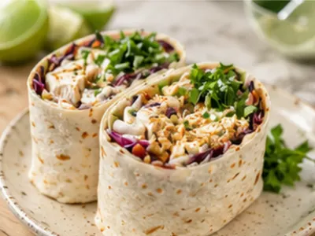
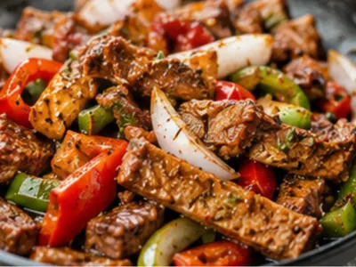
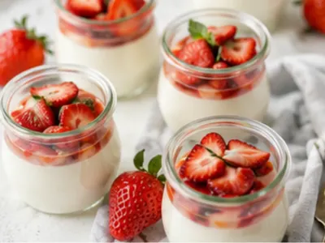
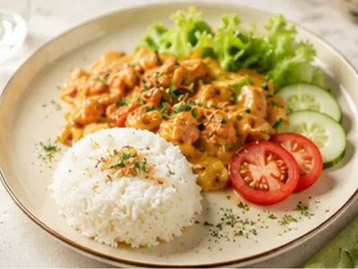
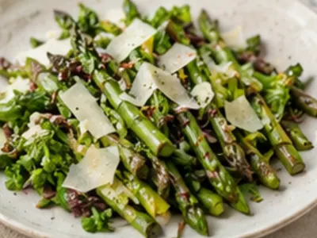
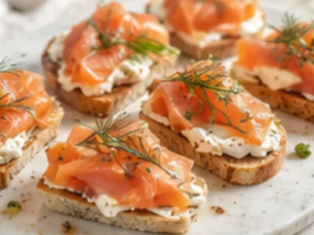
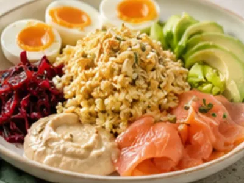
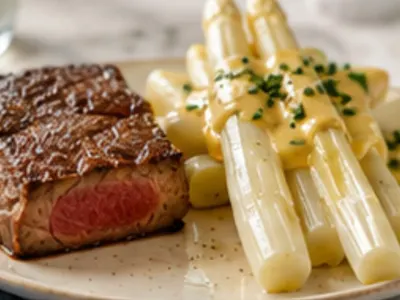
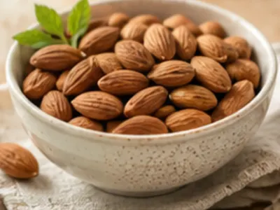
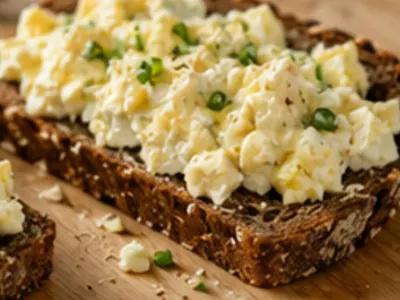
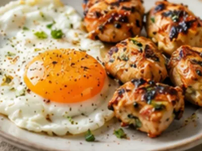
Wir nutzen bewusst das FitLine-Produktkonzept. Grund: gutes Essen allein reicht oft nicht. Was du zusätzlich brauchst, muss auch wirklich im Körper ankommen.We deliberately use the FitLine product concept. The reason: good food alone often isn't enough. What you add on top needs to actually reach your body.Usiamo volutamente il sistema di prodotti FitLine. Il motivo: spesso il buon cibo da solo non basta. E quello che ti serve in più deve arrivare davvero nel corpo.Мы осознанно используем концепцию продуктов FitLine. Причина простая: одной хорошей еды часто недостаточно. То, что тебе нужно дополнительно, должно ещё и реально попасть в организм.Ми свідомо використовуємо концепцію продуктів FitLine. Причина проста: самої лише хорошої їжі часто замало. Те, що тобі потрібно додатково, має справді потрапити в організм.Świadomie stawiamy na koncepcję produktów FitLine. Powód: samo dobre jedzenie często nie wystarcza. To, czego dodatkowo potrzebujesz, musi też naprawdę dotrzeć do organizmu.Съзнателно използваме продуктовата концепция на FitLine. Причината: само добрата храна често не стига. А това, от което имаш нужда допълнително, трябва наистина да стигне до тялото.हम जान-बूझकर FitLine प्रोडक्ट कॉन्सेप्ट इस्तेमाल करते हैं। वजह: अक्सर सिर्फ़ अच्छा खाना काफ़ी नहीं होता। आपको जो अतिरिक्त चाहिए, उसका सच में शरीर तक पहुँचना भी ज़रूरी है।FitLine ürün konseptini bilinçli olarak kullanıyoruz. Çünkü iyi yemek tek başına çoğu zaman yetmiyor. Ek olarak neye ihtiyacın varsa, bunun gerçekten vücuduna ulaşması da gerekiyor.Svesno koristimo FitLine koncept proizvoda. Razlog: dobra hrana sama često nije dovoljna. Ono što ti dodatno treba mora stvarno da stigne tamo gde treba u telu.Apostamos a conciencia por el concepto de productos FitLine. El motivo: muchas veces, comer bien no basta. Lo que necesitas de más también tiene que llegar de verdad a tu cuerpo.我们特意选择了FitLine产品体系。原因很简单：光吃得好，很多时候还不够。额外补充的东西，也得真的被身体吸收才行。저희는 FitLine 제품 콘셉트를 신중하게 골라서 써요. 이유는 간단해요. 좋은 음식만으로는 부족할 때가 많거든요. 추가로 챙기는 것도 몸에 제대로 도달해야 해요.
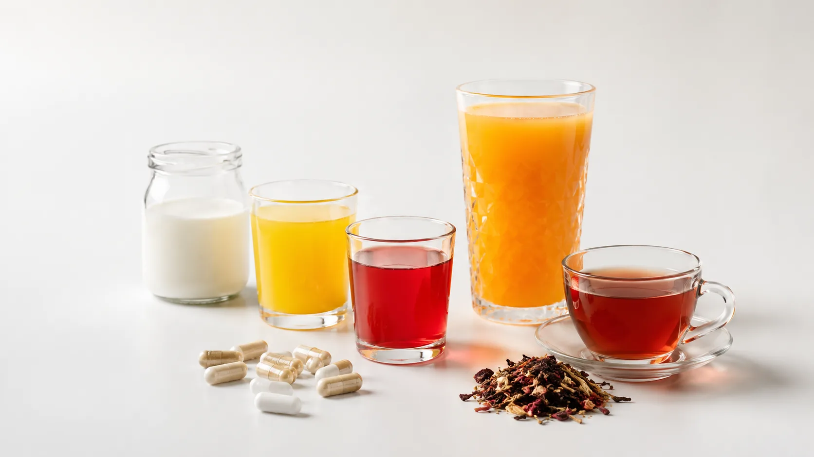
Häkchen setzen. Wir schauen gemeinsam, ob und wie das zu dir passt.Tick the boxes. We'll figure out together if and how this fits you.Metti le spunte. Vediamo insieme se e come può fare per te.Поставь галочки. Вместе посмотрим, подходит ли тебе это и как именно.Постав галочки. Разом подивимося, чи підходить це тобі і як саме.Zaznacz, co się zgadza. Wspólnie sprawdzimy, czy i jak to do ciebie pasuje.Сложи отметки. Заедно ще видим дали и как това е подходящо за теб.बस टिक लगाइए। हम साथ मिलकर देखेंगे कि यह आपके लिए सही है या नहीं, और कैसे।Kutucukları işaretle. Bunun sana uyup uymadığına, uyuyorsa nasıl uyacağına birlikte bakarız.Štikliraj šta važi za tebe. Zajedno ćemo videti da li ti ovo odgovara i kako.Marca lo que te pase. Luego vemos juntos si esto encaja contigo y cómo.勾选符合你的选项。我们一起看看它适不适合你，又该怎么安排。체크해 보세요. 나에게 맞는지, 맞다면 어떻게 맞는지 함께 살펴볼게요.
Deine Anfrage ist bei {{#unless partner_modus=duo}}mir{{/unless}}{{#if partner_modus=duo}}uns{{/if}} angekommen. {{#unless partner_modus=duo}}Ich melde mich{{/unless}}{{#if partner_modus=duo}}Wir melden uns{{/if}} innerhalb von 24 Stunden persönlich bei dir. Your request landed with {{#unless partner_modus=duo}}me{{/unless}}{{#if partner_modus=duo}}us{{/if}}. {{#unless partner_modus=duo}}I'll{{/unless}}{{#if partner_modus=duo}}We'll{{/if}} get back to you personally within 24 hours.{{#unless partner_modus=duo}}Ho ricevuto{{/unless}}{{#if partner_modus=duo}}Abbiamo ricevuto{{/if}} la tua richiesta. {{#unless partner_modus=duo}}Ti ricontatto{{/unless}}{{#if partner_modus=duo}}Ti ricontattiamo{{/if}} personalmente entro 24 ore.Твой запрос уже {{#unless partner_modus=duo}}у меня{{/unless}}{{#if partner_modus=duo}}у нас{{/if}}. {{#unless partner_modus=duo}}Я свяжусь{{/unless}}{{#if partner_modus=duo}}Мы свяжемся{{/if}} с тобой лично в течение 24 часов.Твій запит надійшов {{#unless partner_modus=duo}}до мене{{/unless}}{{#if partner_modus=duo}}до нас{{/if}}. {{#unless partner_modus=duo}}Я зв’яжуся{{/unless}}{{#if partner_modus=duo}}Ми зв’яжемося{{/if}} з тобою особисто протягом 24 годин.Twoje zapytanie dotarło do {{#unless partner_modus=duo}}mnie{{/unless}}{{#if partner_modus=duo}}nas{{/if}}. {{#unless partner_modus=duo}}Odezwę się{{/unless}}{{#if partner_modus=duo}}Odezwiemy się{{/if}} do ciebie osobiście w ciągu 24 godzin.Запитването ти стигна до {{#unless partner_modus=duo}}мен{{/unless}}{{#if partner_modus=duo}}нас{{/if}}. {{#unless partner_modus=duo}}Ще се свържа с теб лично{{/unless}}{{#if partner_modus=duo}}Ще се свържем с теб лично{{/if}} в рамките на 24 часа.आपकी रिक्वेस्ट {{#unless partner_modus=duo}}मेरे{{/unless}}{{#if partner_modus=duo}}हमारे{{/if}} पास पहुँच गई है। अगले 24 घंटों में {{#unless partner_modus=duo}}मेरी तरफ़ से{{/unless}}{{#if partner_modus=duo}}हमारी तरफ़ से{{/if}} आपको व्यक्तिगत जवाब मिलेगा।Talebin {{#unless partner_modus=duo}}bana{{/unless}}{{#if partner_modus=duo}}bize{{/if}} ulaştı. 24 saat içinde sana bizzat dönüş {{#unless partner_modus=duo}}yapacağım{{/unless}}{{#if partner_modus=duo}}yapacağız{{/if}}.Tvoj upit je stigao do {{#unless partner_modus=duo}}mene{{/unless}}{{#if partner_modus=duo}}nas{{/if}}. {{#unless partner_modus=duo}}Javiću ti se{{/unless}}{{#if partner_modus=duo}}Javićemo ti se{{/if}} lično u roku od 24 sata.Tu solicitud {{#unless partner_modus=duo}}me{{/unless}}{{#if partner_modus=duo}}nos{{/if}} ha llegado. {{#unless partner_modus=duo}}Me pondré{{/unless}}{{#if partner_modus=duo}}Nos pondremos{{/if}} en contacto contigo personalmente en las próximas 24 horas.你的咨询{{#unless partner_modus=duo}}我{{/unless}}{{#if partner_modus=duo}}我们{{/if}}已经收到了。{{#unless partner_modus=duo}}我{{/unless}}{{#if partner_modus=duo}}我们{{/if}}会在24小时内亲自回复你。문의가 {{#unless partner_modus=duo}}저에게{{/unless}}{{#if partner_modus=duo}}저희에게{{/if}} 잘 도착했어요. {{#unless partner_modus=duo}}제가{{/unless}}{{#if partner_modus=duo}}저희가{{/if}} 24시간 안에 직접 연락드릴게요.
So viel wie ein Kaffee mit Croissant. Nur dass du dafür 3 Monate lang deine Ernährung komplett umstellst, statt nur kurz wach zu werden.About what you'd pay for a coffee and a croissant. Except this time you're resetting your nutrition for 3 months instead of just waking up for an hour.Quanto un caffè e cornetto. Solo che così per 3 mesi cambi completamente la tua alimentazione, invece di tirarti su solo per poco.Примерно как кофе с круассаном. Только за эти деньги ты 3 месяца полностью перестраиваешь питание, а не просто ненадолго взбадриваешься.Стільки ж, скільки кава з круасаном. Тільки за ці гроші ти на 3 місяці повністю змінюєш харчування, а не просто трохи підбадьорюєшся.Tyle, ile kawa z croissantem. Z tą różnicą, że przez 3 miesiące całkowicie zmieniasz sposób odżywiania, zamiast tylko na chwilę się rozbudzić.Колкото кафе с кроасан. Само че за тези пари за 3 месеца променяш изцяло храненето си, вместо просто да се събудиш за малко.उतना ही, जितना एक कॉफ़ी और क्रोइसां। फ़र्क बस इतना है कि इसमें आप सिर्फ़ थोड़ी देर जागने के बजाय 3 महीने तक अपना खान-पान पूरी तरह बदलते हैं।Bir kahve ve kruvasan parası kadar. Ama karşılığında, sadece kısa süreliğine ayılmak yerine 3 ay boyunca beslenmeni tamamen değiştiriyorsun.Koliko i kafa sa kroasanom. Samo što za to 3 meseca potpuno menjaš ishranu, umesto da se samo nakratko razbudiš.Lo que cuesta un café con cruasán. Solo que con eso cambias por completo tu alimentación durante 3 meses, en vez de espabilarte solo un rato.差不多就是一杯咖啡加一个牛角包的钱。不同的是，这笔钱能让你用3个月彻底调整饮食，而不只是提一下神。딱 커피 한 잔과 크루아상 하나 정도예요. 대신 잠깐 깨어나는 데 쓰는 게 아니라, 그 돈으로 3개월 동안 식습관을 완전히 바꾸는 거예요.
{{#unless partner_modus=duo}}Bei mir{{/unless}}{{#if partner_modus=duo}}Bei uns{{/if}} sogar noch günstiger.Often even less through {{#unless partner_modus=duo}}me{{/unless}}{{#if partner_modus=duo}}us{{/if}}.{{#unless partner_modus=duo}}Con me{{/unless}}{{#if partner_modus=duo}}Con noi{{/if}} costa ancora meno.{{#unless partner_modus=duo}}У меня{{/unless}}{{#if partner_modus=duo}}У нас{{/if}} даже ещё выгоднее.{{#unless partner_modus=duo}}У мене{{/unless}}{{#if partner_modus=duo}}У нас{{/if}} навіть ще вигідніше.{{#unless partner_modus=duo}}U mnie{{/unless}}{{#if partner_modus=duo}}U nas{{/if}} nawet jeszcze taniej.{{#unless partner_modus=duo}}При мен{{/unless}}{{#if partner_modus=duo}}При нас{{/if}} дори е още по-изгодно.{{#unless partner_modus=duo}}मेरे यहाँ{{/unless}}{{#if partner_modus=duo}}हमारे यहाँ{{/if}} तो और भी किफ़ायती।{{#unless partner_modus=duo}}Benden{{/unless}}{{#if partner_modus=duo}}Bizden{{/if}} alırsan daha da uygun.{{#unless partner_modus=duo}}Kod mene{{/unless}}{{#if partner_modus=duo}}Kod nas{{/if}} čak još povoljnije.{{#unless partner_modus=duo}}Conmigo{{/unless}}{{#if partner_modus=duo}}Con nosotros{{/if}}, sale incluso más barato.{{#unless partner_modus=duo}}找我{{/unless}}{{#if partner_modus=duo}}找我们{{/if}}还会更划算。{{#unless partner_modus=duo}}저와 함께하면{{/unless}}{{#if partner_modus=duo}}저희와 함께하면{{/if}} 더 저렴해요.